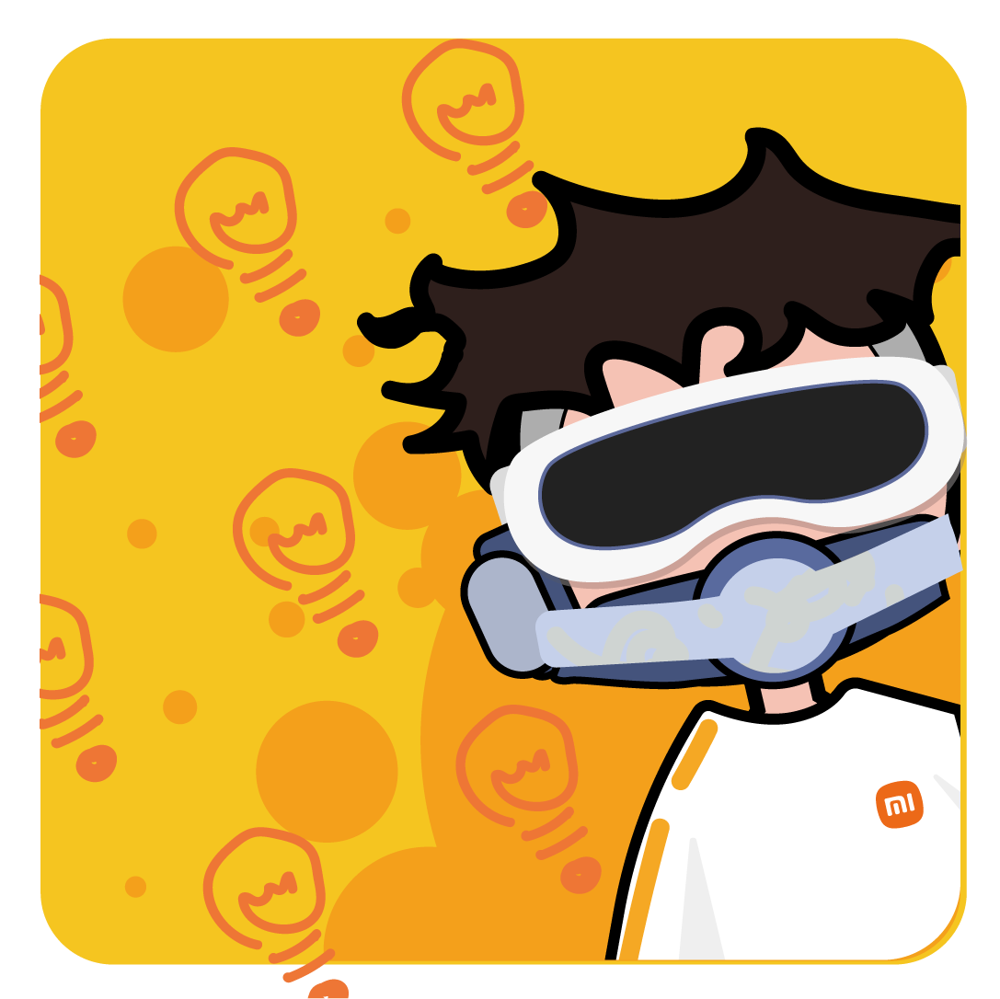

PureMIlk的个人主页
📧 邮箱：puremilkchun@edu.zjnu.cn
🎹 音频实验室
🥛 关于PureMilk
我是一杯持续迭代的「数字牛奶」，致力于将代码转化为滋养创新的养分。目前专注于：
- 🔭 探索领域：全栈开发 × 交互设计 × 数据可视化
- 🌱 技术牧场：React生态 | Python酿造 | 云原生发酵
- 💡 创新配方：用20%技术 + 80%创意调制数字鸡尾酒
🧑💻 近期动态：
正在研发「Milk-UI」开源组件库，用设计系统的思维重构前端开发体验
📝 更新记录
-
2025.03.27
🎉 全新推出暗黑模式
- 新增主题切换按钮
- 支持浏览器本地存储
- 优化过渡动画效果
-
2025.03.27
🚀 性能优化升级
- 压缩背景视频体积
- 启用CSS硬件加速
- 优化移动端加载速度
-
2025.03.27
✨ 初版上线
- 完成基础架构搭建
- 实现欢迎页动画效果
- 部署基础个人信息模块
-
2025.03.28
🎶 有很多
- 加入了4个随机视频
- 修复了欢迎语颜色的问题
- 解决了群友认为我被盗号的问题
- 增加了网页访问量的功能（模拟数据）
-
2025.03.29 1:32
😍 超多更新
- 加入了2个随机视频
- 新增静音切换按钮
- 新增颜色与阴影的细微调整
- 新增音频实验室版块
-
2025.03.29 2:32
⚡ 紧急修复
- 修复了移动设备中无法显示"解除静音"的按钮
- 修复了进入主页后视频未静音的问题
- 调整了音频实验室的图标
- 修复音频组件暗夜模式显示异常
-
2025.03.29 16:57
⚡ 紧急修复
- 重构了访问量显示界面
- 调整了强调色
- 修复切换按钮暗夜模式显示异常
-
2025.03.29 19:02
🥳 细节改善
- 增加了favicon
-
2025.03.29 19:58
🥳 细节改善
- 分离了欢迎页面,解决了重复加载欢迎动画和视频的问题
- 访问次数页面增加了返回首页的按钮
-
2025.03.30 1:40
💥 重磅更新
- 新增VoceChat功能，提供校园内的聊天服务
-
2025.04.28 17:22
👍 重磅更新
- VoceChat功能无法使用
- 网站部署到了github，从此可以外网访问